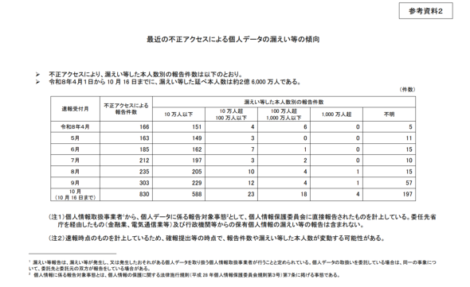

01【注目研究】タイパは「人類の大敵」でした
| NewsPicks原文
あなたに関係ありそうな理由
AIや業務の効率化で空いた時間が新しい仕事に埋まる経験は、職場の生産性や働き方を考える人に身近です。締切の処理だけでなく、長期の判断や創造的な時間をどう確保するかを考える手掛かりになります。
概要
「時間を節約すれば余裕ができる」はずなのに、生成AIなどで仕事が速まると新しい課題にも手を伸ばし、結局また忙しくなる。記事は東京大学大学院教授の出口剛司氏に、時間に追われる感覚を社会学から聞く。行動を合わせるため日時計や水時計で自然の時刻を読み、近代には機械時計が秒・分・時間を作り、公共の鐘が生活を尺度にそろえた。
18世紀の「時は金なり」は、時間を節約した者が利潤を得るという資本主義の考え方を象徴する。マックス・ヴェーバーは、時間に沿って生活を律する態度を「資本主義の精神」と結び付ける一方、巨大な事業を支える組織が個人の自由を圧迫する「鉄の檻」も論じた。出口氏は、終業時刻を決めることも拘束から解放される契機だと説明する。時間は管理や競争を強める一方、仕事を終える境界を設けることで自由を生む面もある。
ドイツの社会学者ハルトムート・ローザが示す加速の要因は、経済競争、自分から経験を増やそうとする欲求、社会や組織の機能分化だ。技術が生産・移動・連絡を速めると、仕事や組織の変化も速くなり、追いつくために生活のテンポまで上がる。情報を集めやすくなれば論文や成果が増え、AIで作業を短縮しても、流通する成果が増えて処理量が膨らむ。加速が次の加速を呼ぶ循環ができると、誰かに急かされていなくても止まりにくくなる。
抽象的な時計時間は予定を立てやすくするが、通勤の景色や街の匂いまで次の予定までの目安に変え、今の経験を薄くすることがある。将来を考えられる利点も、締切を片付けることが優先されると、5年後、10年後を考える余地を狭める。記事は、タイパを追って会話のない場面を飛ばしたり、映画をネタバレで予習したりする例を挙げる。効率は話題や目的を達成する助けになるが、作品から予想外の感情や考えが生まれる経験は減り得る。役に立つか分からない時間に創造性が宿る、というのが出口氏の主張だ。
出口氏はゲオルク・ジンメルの「社会圏の交錯」にも触れる。人が会社だけでなく複数の集団に属すれば、ひとつの組織の規則が生活全体を支配しにくくなるという考え方だ。これを時間に当てはめると、会社の時間とは別の時間を持ち、組織の論理を振り返る余地が生まれる。記事は後編で生産性と創造性の両立を扱うと予告する。効率化で何を増やすかだけでなく、余力をどこへ使うか、予定に載せない時間を残せるかが、働き方を考える焦点になる。
仕事や会話で使える一言
「早くできた時間を何で埋めるかまで決めておきたいですね。」
02オープンＡＩ、資金調達目標を100億ドル引き下げ＝ＦＴ
| NewsPicks原文
あなたに関係ありそうな理由
生成AIのサービスを導入・提供する企業では、モデルの成長だけでなく、計算資源や設備に必要な資金が継続的に集まるかも事業判断に関わります。大型調達の計画と市場の反応を知る材料です。
概要
OpenAIが計画する新たな資金調達について、ReutersはFinancial Timesの報道を伝えた。調達目標は従来の300億ドルから200億ドルへ100億ドル引き下げられ、評価額の想定も1兆4000億ドルから1兆2500億ドルに下がったという。調達を一度に完了したという発表ではなく、報道上の目標額と評価額の見直しである。一部投資家が予定していた出資額を減らしたため、第1段階の調達は200億ドルを下回る見通しとされた。OpenAIはReutersのコメント要請に応じていない。
報道は、AI企業の資金需要をめぐる競争環境にも触れている。Anthropicが11月中旬の新規株式公開を計画しているとされ、OpenAIの調達も投資家の資金配分に左右される。記事が伝えるのは、出資者側の検討と目標の引き下げであり、計画変更の理由をOpenAIが説明したわけではない。
市場ではAI関連支出への懸念が強まり、10月30日のNASDAQ総合指数は2.9％下落した。これは10月6日の終値ベースの最高値を7.8％下回る水準だった。AI向けの計算資源、データセンター、電力などに巨額の投資が続く中、投資家は成長の見込みだけでなく、その支出が将来の売上や利益につながるかも見ている。調達目標の引き下げと株価指数の下落は同じ日の市場環境にあるが、記事は指数下落が今回の計画変更を引き起こしたとは説明していない。
NewsPicksで表示されたコメントでは、資金調達額と企業価値を混同しないようにという指摘や、計算資源への投資を実際の稼働・収益へつなげられるかを見るべきだという見方が出ていた。これらは記事の報道内容ではなく、読者側の論点である。調達計画の見直しは、OpenAIがすでに資金難に陥ったことを直接示すものではない。一方、目標額を満たせるか、評価額の想定が投資家に受け入れられるか、競合の上場計画と資金需要がどう影響するかは、今後の交渉を追う上で確認したい点だ。
調達の時期、投資家が実際に出す金額、計算設備の確保、サービス収入との関係を並べて見る必要がある。今回の報道は、世界最大級の企業価値を掲げるOpenAIでも、計画上の調達額が投資家との協議で動くことを示した。次の発表で調達額、評価額、出資主体がどこまで具体化するかが焦点になる。
仕事や会話で使える一言
「調達目標と企業価値は別の数字として追いたいですね。」
03情報漏えい2.6億人分 焼肉きんぐ、バーガーキング……1000万件超続々、不正アクセス被害企業は？【10月時点】
| NewsPicks原文

あなたに関係ありそうな理由
会員アプリや業務サービスに顧客情報を預ける企業では、保有データの範囲、委託先管理、事故時の説明が経営課題になります。利用中のサービスや自社の保管情報を見直すきっかけになります。
概要
個人情報保護委員会の集計では、2026年4月1日以降に漏えいした、または漏えいの可能性がある対象者数は延べ約2億6000万人に上る。10月16日までに報告された不正アクセスは2094件で、10月の報告だけでも830件だった。記事は重複計上や速報値からの変更があり得ると明記しており、2億6000万人を実人数や確定被害者数とみなすことはできない。1000万人以上に及ぶ大規模事案が続いている点を、企業発表とともに整理している。
個別事案を見ると、7月に公表されたKDDIのISP向けメールシステムでは、メールアドレス1223万1954人分とパスワード761万6173人分が漏えいした。焼肉きんぐの公式アプリでは会員情報1078万8963件、skyticketでは利用者情報約1467万件が対象となり、事案ごとに漏えいした情報の種類も異なる。
10月には、ソースネクストで顧客情報約2252万件、バーガーキングで会員情報約1118万件、ECサイト構築サービス「ショップサーブ」で約2335万6000人分、カプコンで1177万4247件などが相次いで公表された。10月30日に公表された無印良品の公式アプリの事案は、利用者情報約2726万件が漏えいした可能性があるという段階だった。
東京商工リサーチによると、2025年までの過去14年間に1000万件以上の漏えい事件は3回だった。記事は、2026年に大規模事案が続く異常さをその比較で示す。単に合計人数が大きいからではなく、生活者が日常的に使う小売、旅行、通信、ゲームなど複数のサービスが対象になり、メールアドレスや電話番号が別々の場所から漏れることで、被害の連鎖が起きる可能性がある。個人が登録先ごとに注意するだけでは、事業者側の保管方法やアクセス制御を補えない。
NewsPicksの表示コメントでは、利用者が登録先を見直す提案に加え、保有する情報を減らす判断、経営レベルの対応、報告や罰則のあり方が話題になっていた。これは読者の意見で、記事が示した集計値とは区別したい。企業にとっては、どの情報を何のために保持し、いつ削除するのか、委託先や古いシステムを含めて誰が管理するかが問われる。被害件数の公表と並行して、対象データの確定、本人への連絡、再発防止策がどこまで明らかになるかを追う必要がある。
仕事や会話で使える一言
「保有している個人情報を、目的と期限まで説明できる状態にしたいですね。」
04暗号資産巨額盗難、北朝鮮関与か 米大統領「調査中」、バイナンス
| NewsPicks原文
あなたに関係ありそうな理由
取引所や金融サービスでは、本人確認に加えて送金権限や承認経路の管理が資産保全を左右します。侵入の入口や権限付与の手順を知ることで、組織内の承認設計を点検する材料になります。
概要
暗号資産取引大手Binanceで起きた巨額盗難をめぐり、トランプ米大統領は10月30日、北朝鮮の関与を調査していると述べた。ホワイトハウスで北朝鮮のハッカー集団による犯行か問われ、「分からない、調査中だ」と答えた。記事の時点で北朝鮮の関与が確定したわけではない。事件の規模が大きいことと、攻撃主体が特定されたことは別であり、捜査の進展を見て判断する必要がある。
同じ日に、Binanceのリチャード・テン共同最高経営責任者は、調査で把握した攻撃手口の概要を公表した。複数人が関わり、システム上で暗号資産を送金する権限を不正に取得したという。攻撃と並行して痕跡を消す仕組みも使われ、追跡が難しくなったと説明した。当初は技術者のパソコンへの不正アクセスが社内侵入の踏み台になったと考えていたが、追加調査で別の侵入箇所も見つかった。
CEOの説明では、送金権限はBinanceの通常の承認手続きを経ずに取得されていた。つまり、端末への侵入だけでなく、誰が送金を承認できるか、権限がどの経路で付与されたか、異常な操作を検知できたかが調査対象になる。複数人の関与や痕跡の消去があったとの説明からも、単一端末のウイルス対策では全体像を説明できない。事業者側がどの範囲まで不正操作の記録を追い、被害の拡大をどう止めるかが焦点になる。
テン氏はXに状況説明の動画を公開し、盗まれた資産の回収と攻撃者の特定に向けて捜査当局などと連携しているとした。記事は回収額や攻撃者の名前、北朝鮮との具体的な接点を示していない。共同通信記事本文は回収額や攻撃者の名前、北朝鮮との具体的な接点を示していない。本文で確認できるのは、複数の侵入箇所、権限の不正取得、承認手続きの迂回、捜査当局との連携である。
NewsPicksに表示されたコメントでは、Fractonの鈴木雄大氏が署名承認経路や秘密鍵流出の痕跡、チェーン上の記録、ステーブルコイン凍結の可能性などを挙げ、今後の確認点を示していた。これは専門家コメントの分析で、共同通信が報じたCEO説明や大統領発言とは別の見立てである。取引所は、権限を誰がどのように変更したか、資産移動をどう検知するか、被害後に準備金や出金の状況をどう説明するかを問われる。捜査の結果と、資産回収・顧客対応の更新が次の焦点になる。
仕事や会話で使える一言
「攻撃の入口だけでなく、送金権限がどう承認されたかも確認したいですね。」
05高市氏、国会での答弁数が最少 5首相平均、SNSは突出し最多
| NewsPicks原文
あなたに関係ありそうな理由
国会での説明とSNSでの発信は、政治家が有権者や議会に向けて使う異なる経路です。公開記録の数字を、議論の質や政策判断と混同せずに読む視点が役立ちます。
概要
共同通信は、2012年の第2次安倍政権以降の首相5人について、衆参の委員会記録システムを使って答弁数などを調べた。予算委員会の1回当たり平均答弁数は、高市早苗氏が1175回で5人の中で最少だった。石破茂氏は1760回、岸田文雄氏は1800回、菅義偉氏は1309回、安倍晋三氏は1455回だった。比較は公開された議会記録を集計したもので、首相がどれほど国会に出たか、答弁がどれほど政策論争に役立ったかを直接評価する数字ではない。
記事が扱うもう一つの指標は、首相就任から1年間のSNS投稿数だ。高市氏は5人の中で突出して最多だった。本文は国会答弁が少なくSNS発信が多いという対照を示しているが、投稿数だけで政策説明の質や有権者への影響を判定できるわけではない。記事の見出しや説明にある「国会審議を軽視しているとの指摘をデータで裏付ける」という読み方については、表示コメントで異論も出ており、数値と政治的評価を区別する必要がある。
比較の条件にも注意がいる。高市氏の対象となった初年度は2月から7月にかけての特別国会で、会期は158日だった。ほかの4人は通常国会が対象となり、通常の会期はおおむね150日とされる。委員会の開催日数、質問者の構成、政治課題、答弁の分担なども首相の答弁回数に影響し得る。記事の数字は条件をそろえようとした比較だが、異なる政権の発言量を一つの順位にまとめるときには、単純な大小だけを結論にしないほうがよい。
データの出所は議会の記録システムで、記事は図表と期間の注記を掲載している。一方、委員会の答弁数は質問への応答の回数であり、答弁の長さ、内容、質問への直接性や、実際の政策への反映までは測らない。SNSの投稿数も発信の量を示すが、読者にどの程度届き、理解や行動に結び付いたかを示す数字ではない。
このため、記事の数字から分かることと、評価に必要な追加材料を区別して読む必要がある。答弁回数は国会での応答頻度、SNS投稿数はオンライン発信の頻度を示す。両方を並べると政治家の発信先の違いは見えるが、国会軽視や説明責任の十分さをそれだけで断定はできない。NewsPicksの表示コメントでも、記事の政治的な解釈に疑問を呈する意見があった。今後は発信量だけでなく、議論の中身、質問への応答、政策決定に結び付く説明がどう行われるかを実際の記録で確認したい。
仕事や会話で使える一言
「発信の量と、説明の中身は別の記録で確かめたいですね。」